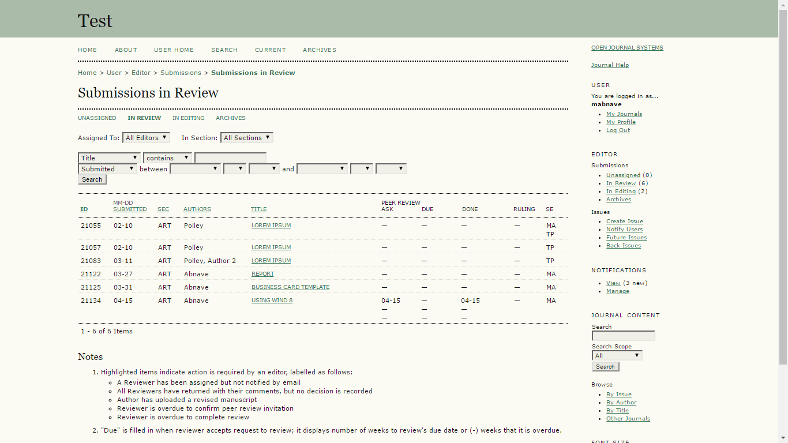

Open Journal System
Summary
A redesign of the Public Knowledge Project's Open Journal Systems with a focus on improving communication and coordination as well enhancing the visibility of task status and action items to ease and streamline the work done by academic journal editors at all phases of the issue creation process. From receiving a rough manuscript from an author to coordinating the peer review process, copy-editing, and compiling suitable articles to publish in an issue, OJS empowers editors to get the work done right.
Design Process
- Review of existing system
- Contextual Inquiries
- Data Analysis and Modeling
- Ideation
- Paper Prototyping
- Thinkalouds
- High Fidelity Prototype
Existing System Review
Exploring the existing OJS system with my teammates revealed its scale, functionality, and limitations. It supports hundreds of authors, editors, journal managers, etc in publishing and accessing academic journals, but its messaging system is clunky, managing file versioning is difficult, and it looks forbidding.
Contextual Inquiries
We conducted contextual inquiries with several users to discover how they actually used it day to day to conduct their work. These contextual inquiries revealed that journal editors were the most robust users of the system, and that they had devised ingenious ways to overcome its lack of support for some of their processes

Data Analysis and Modeling
Creating an affinity diagram and flow diagrams illuminated the very process-driven tasks that editors do to publish a journal issue.

Analysis and Modeling helped us identify areas of focus:
- Highlight manuscript status and pending tasks
- Improve coordination and eliminate conflicts between users
- Update visual design to promote discoverability and awareness of available features
Ideation
Brainstorming sessions, sketching, and lots of discussion on the merits and feasibility of the ideas we generated.
We decided to design a system based around a central kanban board with lists that represented the phases of the review process.
Paper Prototype and Thinkalouds
We created a paper prototype which we used to conduct think-alouds with some journal editors to find out how well it supported their work process and get feedback for possible improvements.
High Fidelity Prototype
We built a high fidelity prototype with Axure to embody our design solution and conducted think-alouds with editors to discover how we might improve the idea.
The Dashboard
A Kanban-style board that shows the overall status of the upcoming issue. Editors can see the people whom they are collaborating with (in the top left) as well as how many people they are having conversations with on a specific manuscript (the numbered callouts).
Unassigned
An unassigned manuscript is fresh from the author and needs to have an editor assigned to it. Key interface elements such as the timeline (that shows every event and change made to the manuscript), the versions pane (that keeps tracks of each user's version), and messages pane (where editors can communicate with each other, reviewers, etc) are shown.

Assign an Editor
An editor can self-assign or assign another editor to take charge of an unassigned manuscript

Assign Peer Reviewers
With the existing site, finding reviewers was a bit of a dark art, which our editors had mastered, but they were happy to see a simpler way.

In Review
A lot of collaboration, so many versions, lots of messages going back and forth, and that timeline's getting long

Preview and Review
No more need for Microsoft Word. View, edit, and annotate the manuscript right in the browser.

Check out some of my other projects

MINDSpeed
Building a system to easily order healthy food and get rewards

Sharendipity
Enabling serendipitous connections between people in close proximity who share interests

IUSOC VMS
Improving and easing the process of signing up volunteers

The Car Wizard
Making the online car shopping process a breeze, one answered question at a time
Back to Projects To Top